No.01
Darwin Godel Machine
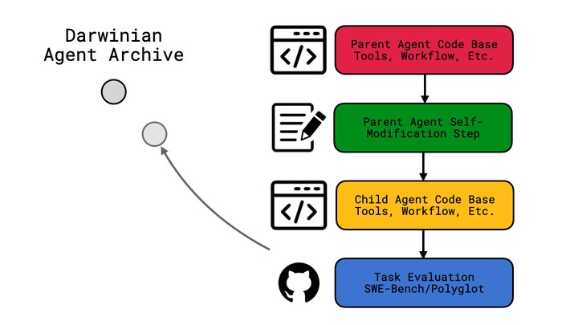
Editor's pickFrom the repo READMEarchive of agents modifying their own code, thereby improving their ability to modify it
Recursive Self-Improvement
Papers in which the loop that improves a system also changes the thing doing the improving.
The agent's working directory contains the agent, so an edit can land on the part that decides what to edit next.

Editor's pickFrom the repo READMEarchive of agents modifying their own code, thereby improving their ability to modify it
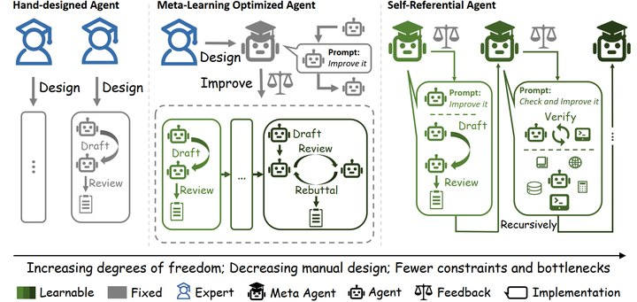
Editor's pickFrom the repo READMEleverages LLMs to dynamically modify its own logic and behavior, no fixed optimization algorithm
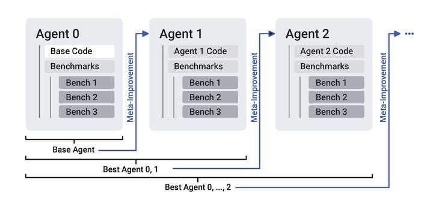
Editor's pickFrom the repo READMEagent system with coding tools autonomously edits itself, including its own edit logic
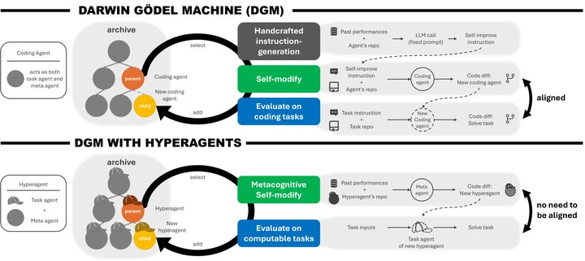
Fig. 1 of the papermeta agent modifies itself and the task agent; meta-level modification procedure is itself editable
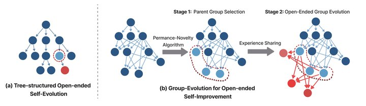
From the repo READMEgroup of agents autonomously modify their own structural designs, sharing experience across evolution
coding agents edit their own codebases; CMP guides the tree of self-modifications
software agent autonomously evolves itself on the fly at runtime while solving tasks
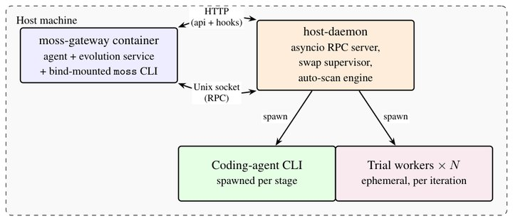
Figure on p. 4self-rewriting at source level, reaching routing, hooks and dispatch in its own harness
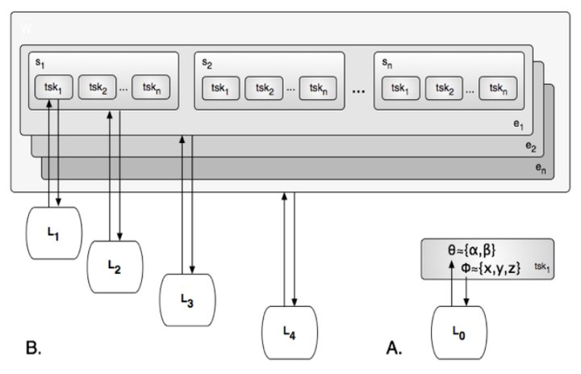
Figure on p. 3reflective self-programming architecture that rewrites its own models, achieving bounded recursive self-improvement
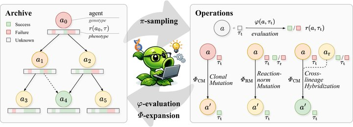
Fig. 1 of the papercoding agents iteratively rewrite their own source code via new self-modification operators
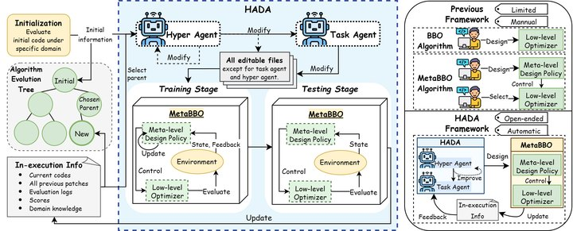
From the repo READMEhyper agent modifies the task agent and itself, its own files included
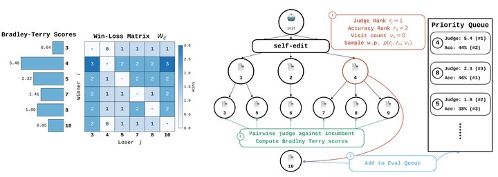
Fig. 1 of the papereach patch rewrites the code that orchestrates the coding model, so improvements compound recursively
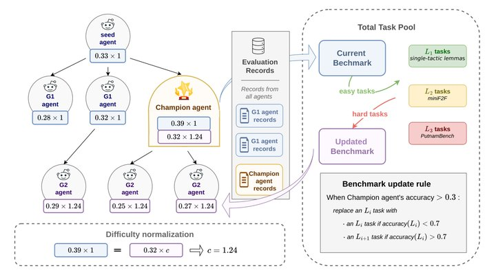
Fig. 1 of the papermutable workspace holds the proof workflow together with the meta-level logic that adapts it
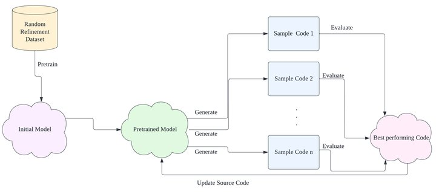
Fig. 1 of the papermodel writes the source code that defines its successor, which then writes the next one
The improvement is produced by a procedure, and that procedure is applied to itself.
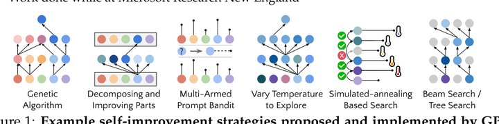
Editor's pickFigure on p. 1seed improver is run on itself; the improved improver then generates better programs
model's own generation controls its adaptation; self-edit policy RL-trained on outcomes
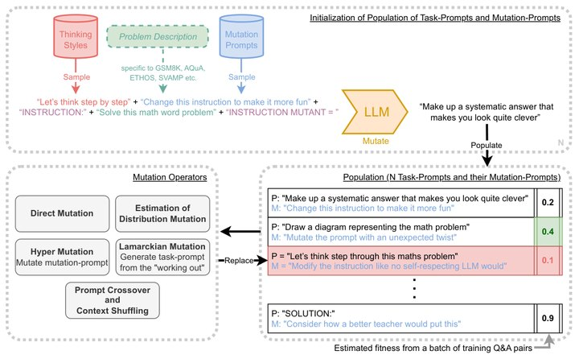
Editor's pickFigure on p. 3mutation-prompts that govern task-prompt mutation are themselves improved by the same evolution
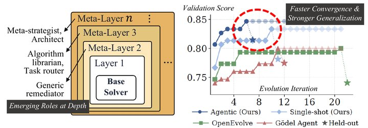
From the repo READMEoperation applied to its own products, each layer written over the code that produced it
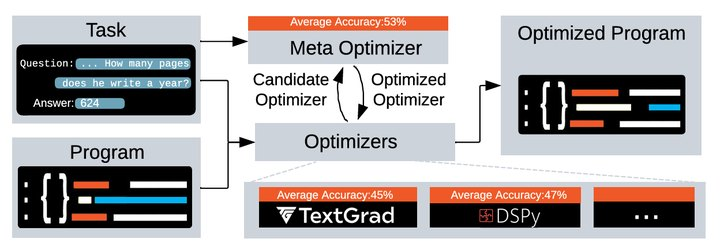
From the repo READMEmeta prompt and meta structure optimizer that optimizes the LLM optimizers themselves
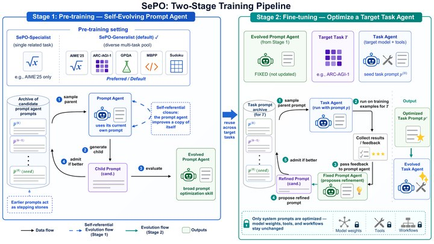
From the repo READMEsingle prompt agent improves task agents' prompts and its own system prompt
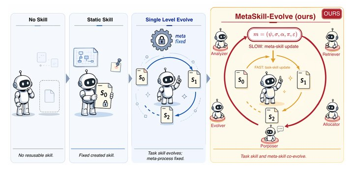
Fig. 1 of the paperbranch-local meta-skill parameterising the improvement pipeline evolves alongside the task skill
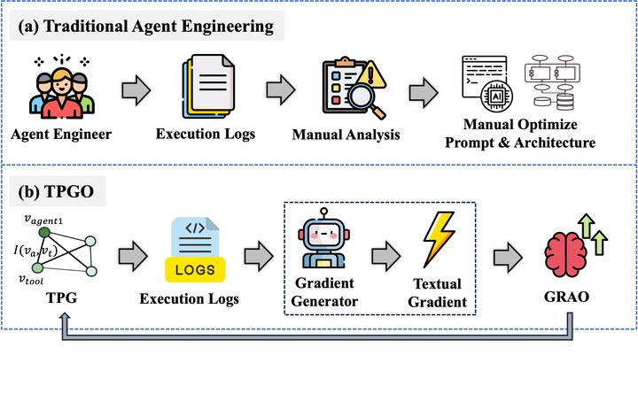
Fig. 1 of the paperGRAO learns from optimization history to improve the optimizer's own optimization strategies
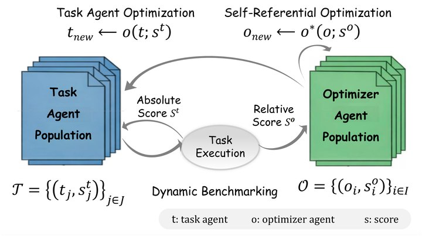
From the repo READMEpopulation of optimization agents is recursively applied to optimize itself
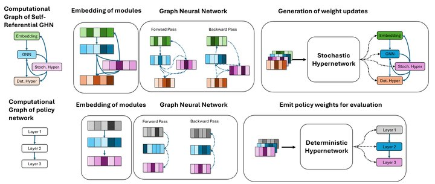
Fig. 1 of the paperhypernetwork produces the updates to copies of itself, so the mutation mechanism evolves
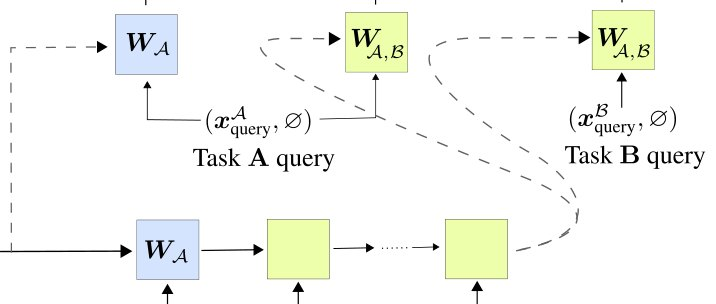
Figure on p. 3self-referential networks metalearn their own in-context continual learning algorithms
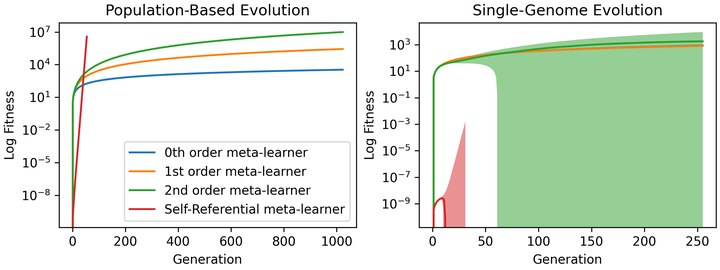
Fig. 1 of the paperpopulation evolution optimises arbitrarily-high order meta-parameters, including rules updating the update rules
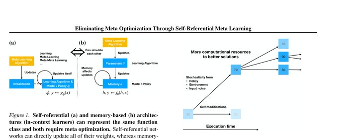
Figure on p. 3network self-modifies and improves its own self-modifications without explicit meta optimization
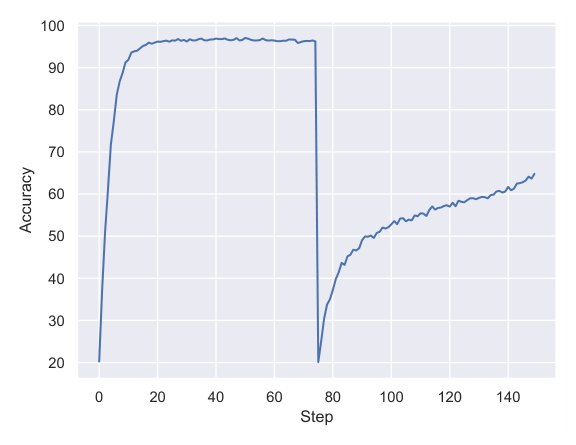
Figure on p. 6weight matrix learns update rules that keep modifying all of itself at runtime
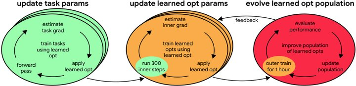
Fig. 1 of the paperlearned optimizers train themselves from random initialization, with no hand-designed optimizer
The scaffold around the model is the substrate, and the component doing the scaffold editing is inside the substrate.
tools, prompts and core implementation improve through commits that become the runtime for later evolution
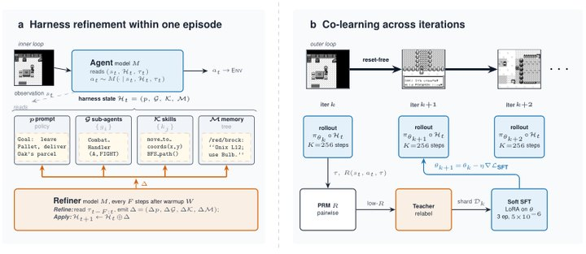
Fig. 2 of the paperagent alternates acting with refining its own prompt, sub-agents, skills and memory
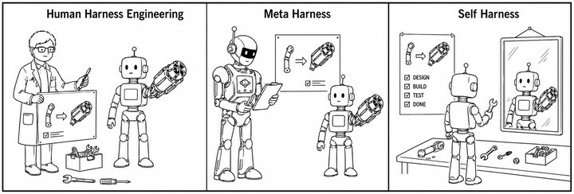
Fig. 1 of the paperagent improves its own operating harness via weakness mining, proposal and regression validation
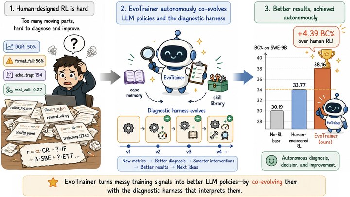
Fig. 1 of the paperco-evolves policies and training harnesses while revising its own diagnostics across rounds
A meta level writes candidate agents, operators or memory architectures as code, then searches the archive it just extended.
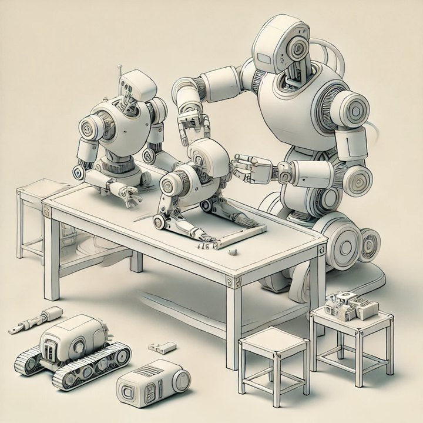
Editor's pickFrom the repo READMEmeta agent programs new agents in code, discovering ever better ones
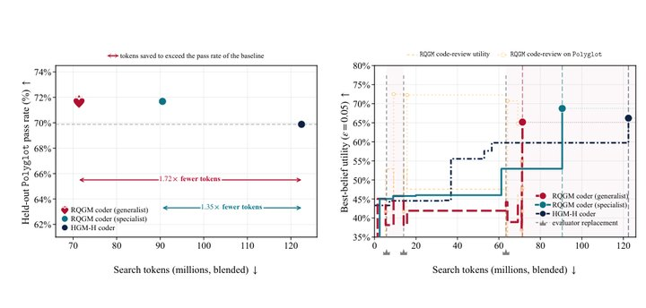
Figure on p. 2self-improvement search whose utility and evaluators evolve at epoch boundaries inside the loop
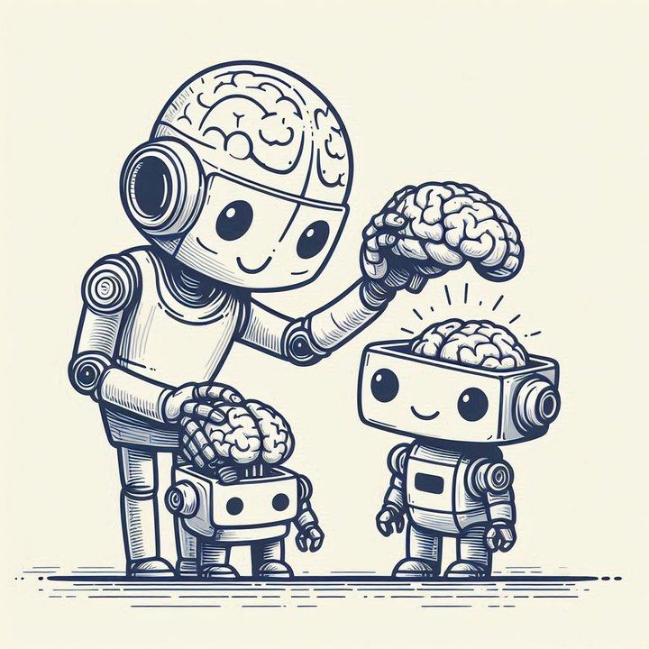
From the repo READMEMeta Agent searches over memory designs as executable code, open-ended
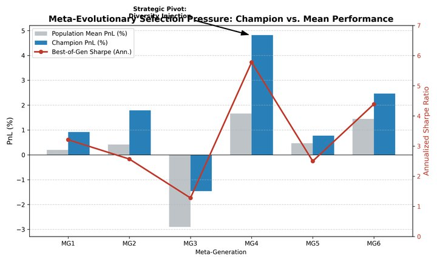
Fig. 2 of the papermeta-evolutionary outer loop evolves the prompts and search heuristics guiding its own synthesis
Machines and theorems, where the question was first posed: what self-modification can be proved to buy, and at what cost.
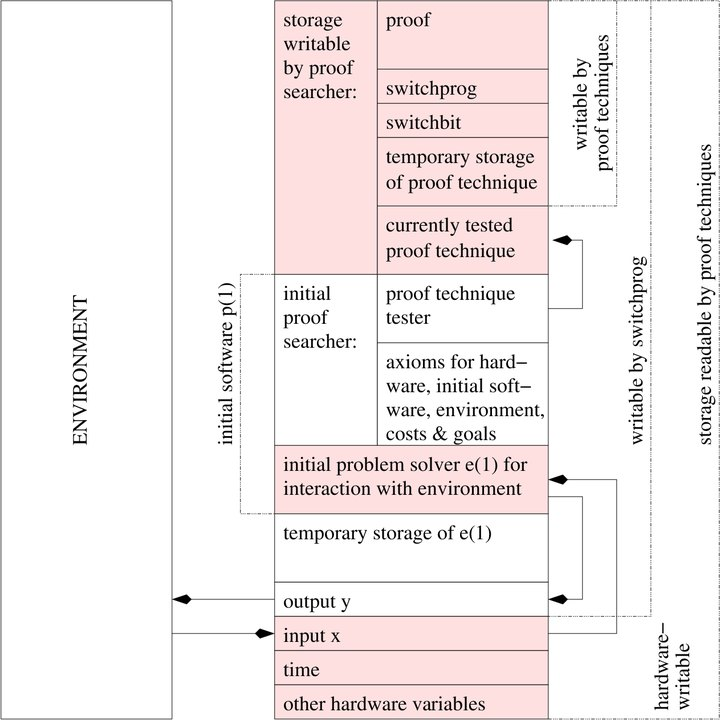
Editor's pickFig. 1 of the paperprovably optimal self-improvements via self-referential proof-based rewriting
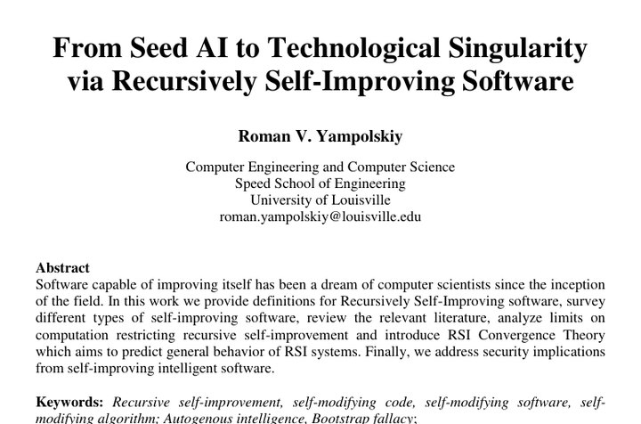
Page 1 of the paperdefines recursively self-improving software plus an RSI convergence theory for systems improving their own improvement
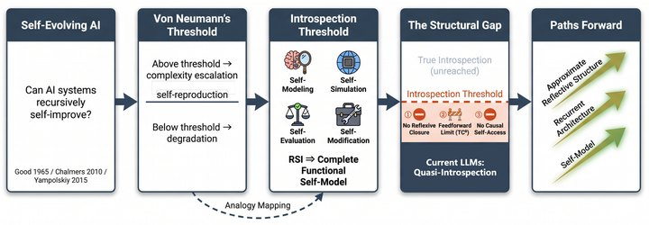
Fig. 1 of the paperKleene recursion theorem grounds introspective programs that simulate and target their own operations
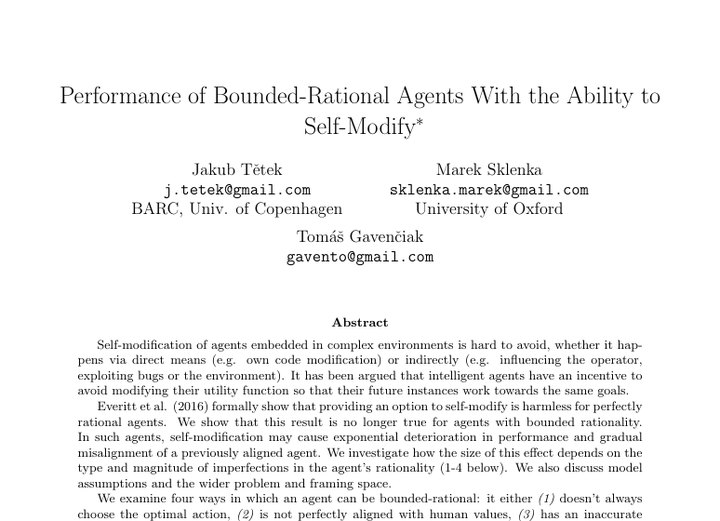
Page 1 of the paperformalises agents modifying their own code and utility, bounding the resulting deterioration
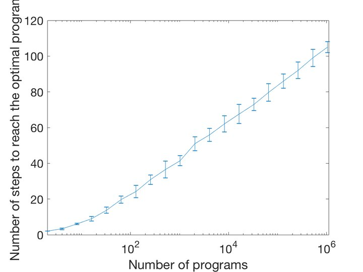
Fig. 2 of the paperformal definition of RSI systems that improve their own improvement, with efficiency results
formalises agents changing their own source code, policy and utility function
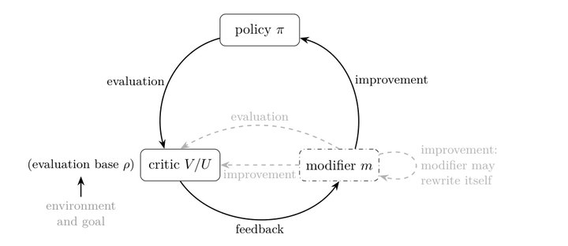
Figure on p. 6formal framework in which the mechanism that improves the agent becomes part of the agent
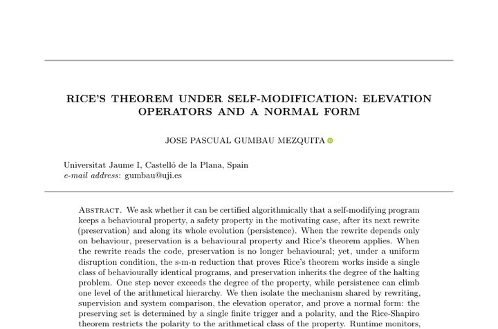
Page 1 of the paperRice's theorem carried to systems that inspect and rewrite their own code
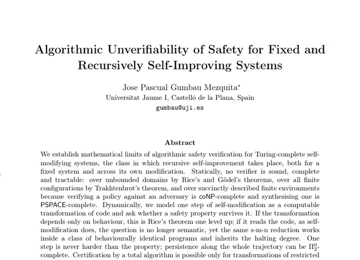
Page 1 of the paperformalises self-modification as a computable transition operator, proving safety undecidable across self-modification steps
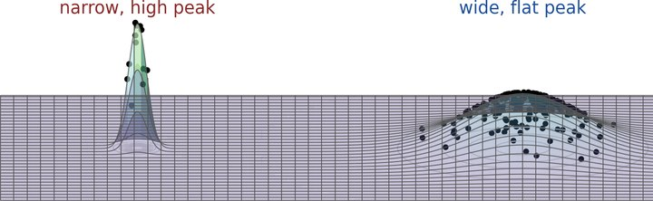
Fig. 1 of the paperevolution theory for lineages in which each AI designs its descendants
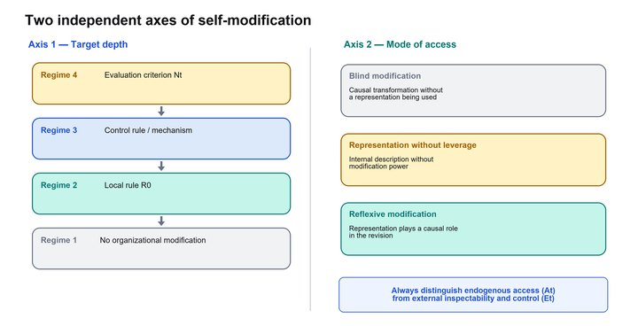
Fig. 1 of the paperformalises regimes up to teleological revision: revising the norm that evaluates its own revisions
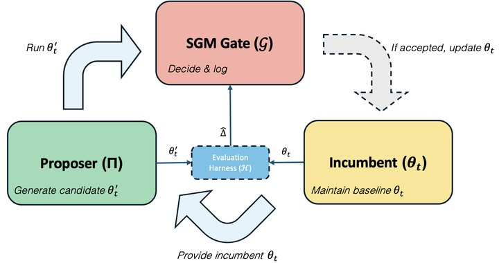
Fig. 1 of the paperstatistical certificates admit recursive self-edits, replacing the Godel machine's proof requirement
Self-improving and self-evolving agents, prompt optimization, memory and skill libraries, benchmarks and safety work are covered by these lists.